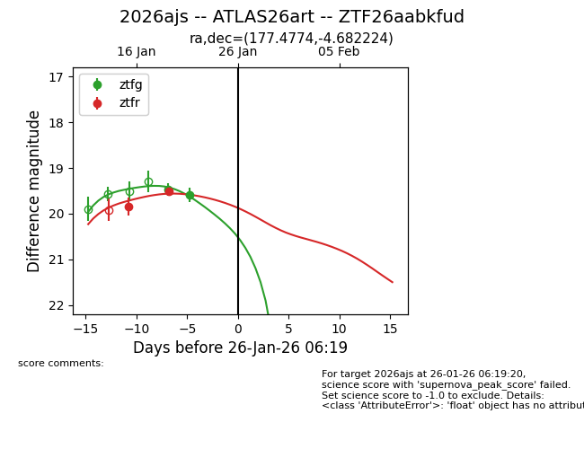
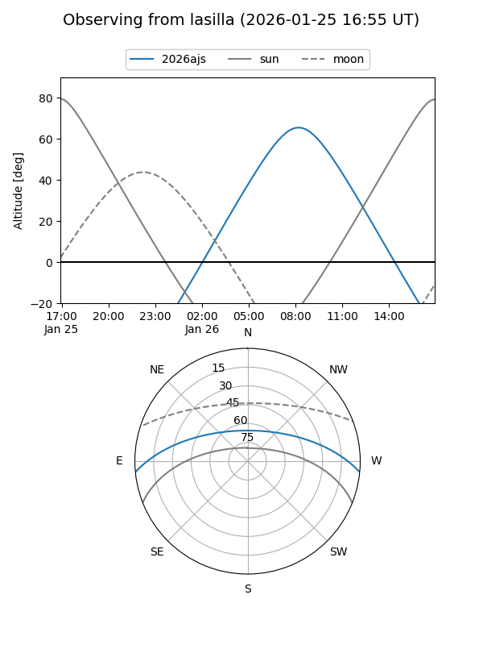
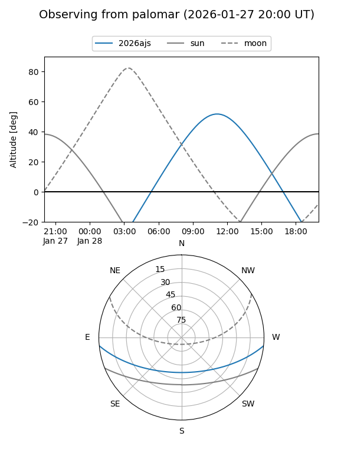
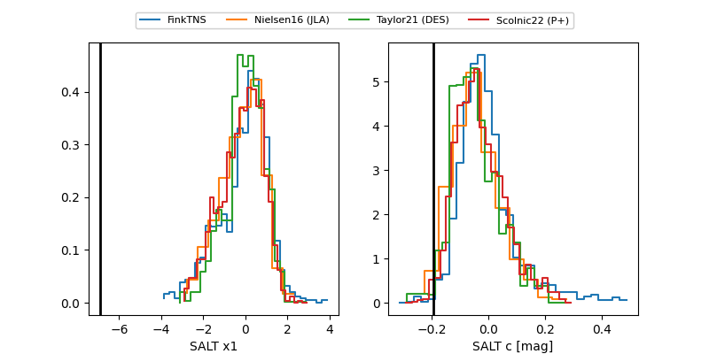

2026ajs
Target 2026ajs at 2026-01-20 05:51
Aliases and brokers:
FINK: link
Lasair: link
ALeRCE: link
TNS: link
YSE: link
alt names
ZTF26aabkfud (ztf,fink_ztf)
2026ajs (tns,yse)
ATLAS26art (atlas)
Coordinates:
equatorial (ra, dec) = 177.4774,-4.68222
equatorial (HMS+DMS) = 11:49:54.58,-04:40:56.01
galactic (l, b) = (275.5692,+54.88728)
Flags:
Photometry:
last ztfg=19.47, ztfr=19.51
1 ztfg, 2 ztfr detections
Lightcurve

Visibility


Additional plots
